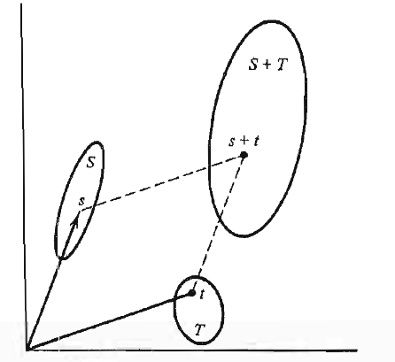

Ders 3
Örnek
Bir önceki örneğin doğal bir uzantısı n-boyutlu reel kordinat uzayı olabilir. Bu uzaydaki vektörler n-öğeli içinde n tane reel sayı olan bir dizidirler, ve vektörler $x = (\xi_1, \xi_2,...,\xi_n)$ formundadırlar. Reel tek sayı $\xi_k$'ye vektörün $k$'inci elemanı adı verilir. İki vektör, eğer tüm öğeleri birbirine eşit ise, eşittir. Sıfır vektörü $\theta = (0,0,...,0)$ şeklinde tanımlıdır.
$n$ boyutlu reel kordinat uzayı $\mathbb{R}^n$ olarak tanımlanır. Buna tekabül eden n-öğeli kompleks sayıların uzayı $\mathbb{C}^n$'dir.
Bu noktada aslında boyut kavramını devreye sokmak için biraz erken. Daha ileriki derslerde boyut kavramının detaylı tanımı yapılacak, ve bu bahsettiğimiz uzayların hakikaten n-boyutlu olduğu ispatlanacak.
Örnek
Sonsuz sayıda eleman, sonsuz öğeli dizi içeren vektörlerlerle ilginç bazı uzaylar inşa edilebiliyor, ki bu uzayda tipik bir vektör vektörler $x = (\xi_1, \xi_2,...,\xi_k,...)$ şeklinde oluyor. Diğer bir şekliyle $x = {\xi_k}_{k=1}^{\infty}$. Toplama ve çıkartma önceden olduğu gibi teker teker, sırası birbirine uyan öğeler arasında yapılıyor. Reel sayılardan oluşan her türlü sonsuz dizilerin listesi bir vektör uzayı oluşturuyor. Bir dizi ${\xi_k}$'ye sınırlı (bounded) denir, eğer her $k$ için $|\xi_k| < M$ olacak şekilde bir $M$ sabiti var ise. Sonsuz ve sınırlı (tanımını biraz önce yaptık) olan her dizi bir vektör uzayı oluşturur, çünkü iki sınırlı dizinin birleşimi, ya da dizinin sayısal çarpımı yine bir sınırlı dizi olacaktır.
Örnek
İçinde sonlu / belirli (finite) miktarda sıfıra eşit olmayan öğe içeren tüm dizilerin birleşimi bir vektör uzayıdır (her vektör -dizi- içinde farklı miktarda sıfır olmayan öğe olabilir). Bu uzaya sonlu sayıda sıfırı olmayan dizilerin uzayı ismi verilir.
Örnek
Sonsuz tane reel sayıdan oluşan ve hepsi de sıfıra yaklaşan dizilerin birleşimi bir vektör uzayıdır, çünkü bu tür sıfıra yaklaşan iki dizinin toplamı da aynı şekilde sıfıra yaklaşır. Böyle bir dizinin skalar ile 'çarpımı, yani katı yine sıfıra yaklaşır.
Örnek
Reel çizgi üzerinde bir $[a,b]$ aralığı düşünün. Bu aralık üzerinde tanımlı tüm sürekli fonksiyonlar bir vektör uzayı oluşturur. İki vektör $x,y$ daha detaylı olarak $x(t),y(t)$ olarak kullanılıyor, ki $t \in [a,b]$. Eğer $x = y$ ise $x(t) = y(t)$ demektir. $(x+y)(t) = x(t) + y(t)$ ve $(\alpha x)(t) = \alpha x(t)$ kullanılır. Sıfır vektörü $\theta$ bu aralıkta sürekli sıfır değerinde olan vektördür. Bu uzaya [a,b] arasında reel değerli sürekli fonksiyonlar uzayı denir.
$[a,b]$ aralığında tanımlı tüm sürekli fonksiyonların vektör uzayı oluşturması mantıklı değil mi? Çünkü bir fonksiyon verilen bir değer için bir başka değer üretmez mi? O zaman bu değerleri $[a,b]$ aralığına tekabül eder şekilde yanyana düşünürsek, onlar da bir tür dizin oluştururlar. Dizinin içeriği tabii ki fonksiyonun ne olduğuna göre değişecektir, ama içerik sonuçta belli bir sayı dizisidir. Ve tüm bu farklı dizinleri düşünürsek, onlar bir vektör uzayı oluşturabilirler. Ayrıca tüm sürekli fonksiyonlardan bahsediliyor, bu neredeyse tüm reel sayı dizileri demek gibi bir şey, çünkü $[a,b]$ aralığındaki her türlü fonksiyon uzaya dahil edilmiş. Her türlü kıvrılan, bükülen, artan, azalan fonksiyonu düşünelim, bunların tamamı muhakkak bir vektör uzayı tanımlayabilirler.
Şimdi birkaç vektör uzayını birleştirerek nasıl daha büyük bir tane yaratabileceğimizi görelim.
Tanım
$X,Y$'nin aynı skalar alanı üzerinden tanımlı iki vektör uzayı olduğunu düşünelim. $X,Y$'nin kartezyen çarpımı, ki bu $X \times Y$ olarak gösterilir, iki öğeli sıralanmış bir dizi oluşturacaktır, yani $(x,y)$, ki $ x \in X, y \in Y$. $X \times Y$ üzerinde toplama ve skalar çarpım $(x_1,y_1) + (x_2,y_2) = (x_1+x_2, y_1+y_2)$ ve $\alpha(x_1,y_1) = (\alpha x_1,\alpha y_1)$.
Üstteki tanımın bir vektör uzayı olmanın gerekliliklerini yerine getirdiği ortadadır. Hatta bu tanım kolaylıkla $n$ tane vektör uzayının kartezyen çarpımına genişletilebilir, yani $X_1,X_2,..,X_n$. Bu çarpımı temsil etmek için $X^n$ yazacağız.
Alt Uzaylar (Subspaces), Lineer Kombinasyonlar, ve Lineer Çeşitler (Linear Varieties)
Tanım
$M$, $X$'in boş olmayan bir alt uzayıdır (subspace) eğer $\alpha x + \beta y$ formundaki her vektör $M$ içinde ise, ve $x,y \in M$ olmak üzere.
Hiçbir alt uzayın boş olmadığını baştan kabul ettiğimize göre, içinde en az bir $x$ olmalıdır. Tanım itibariyle ayrıca $0 x = \theta$'yi da içermelidir, o zaman her alt uzay sıfır vektörünü de içerir. En basit alt uzay içinde sadece $\theta$ olan alt uzaydır. Üç boyutlu uzayda orijinden geçen bir düzlem bir alt uzay oluşturur, orijinden geçen bir çizgi aynı şekilde bir alt uzay oluşturur.
$X$'in tamamı da $X$'in (yani kendisinin) bir alt uzayıdır. Tüm uzaya eşit olmayan bir alt uzaya düzgün (proper) alt uzay denir.
Her alt uzay kendi öğelerinin toplamlarını, ve katlarını içerdiği için aynı anda bir uzayı tanımlayan 7 gerekliliği (axiom) otomatik olarak yerine getirmiş olur. Zaten alt uzay derken "uzak" kelimesini kullanabilmemizin sebebi budur.
Diyelim ki $X$ uzayı $n$ öğeli dizinlerin (tuple) birleşimi. Bu dizinlerin bir kopyasını düşünelim, tek farkla, 1. öğenin hep sıfır olsun. Bu bir alt uzaydır. $1/2$ noktasında sıfır olan $[0,1]$ üzerinde tanımlı sürekli fonksiyonlar, tüm sürekli fonksiyonların bir alt uzayıdır.
İki alt uzayın evliliği (union, $\cup$ ile gösterilen) bir alt uzay olmayabilir. Bir düzlem üzerinde mesela, aynı yönde gitmeyen (noncolinear) iki çizginin evliliği, bu iki ayrı çizginin rasgele toplamlarını içermediği için alt uzay olma şartını yerine getirmez. Fakat "kümelerin toplamı" kavramından hareketle, iki alt uzay daha büyük bir alt uzay olarak özel bir şekilde birleştirilebilir.
Tanım
Bir vektör uzayının $S,T$ adlı iki alt kümesinin toplamı $S+T$ olarak gösterilir, ve her $s+t$ formundaki tüm vektörleri içerir, ki $s \in S,t \in T$ olmak üzere. Dikkat, daha $S,T$'nin alt uzay olduğunu söylemiyoruz, sadece küme diyoruz (şimdilik).

Üstteki resim toplam kavramını iki boyutlu uzayda (ki bu bir vektör uzayıdır) gösteriyor. Vektör uzayı, $S,T$ içindeki noktalara doğru işaret eden orijinden çıkan iki vektörü görüyoruz. Toplam olarak, hakikaten $S$'teki noktanın / vektörün mesela (3,1) olduğunu düşünsek, $T$'deki noktanın / vektörün (1,3) olduğunu düşünsek, onların toplamı olarak gösterilen nokta kabaca (4,4) gibi duruyor değil mi? Şekil bu kavramı temsili olarak iyi göstermiş. Toplamın ayrıca daha büyük bir küme olduğuna dikkat.
Teori
Diyelim ki $M,N$ vektör uzayları $X$'in birer alt kümesi. O zaman bu kümelerin toplamı $M + N$ aynı şekilde $X$'in bir alt uzayıdır.
İspat
$M+N$'nin $\theta$'yi içerdiği bariz. Devam edelim, $x,y \in S+T$ için muhakkak
$$ x = m_1 + n_1 $$
$$ y = m_2 + n_2 $$
var demektir, ki $m_1,m_2 \in M$, $n_1,n_2 \in N$. Bu küme toplamı tanımından geliyor zaten.
Şimdi $x,y$'yi ayrı ayrı rasgele sabitler $\alpha,\beta$ ile çarpalım.
$$ \alpha x = \alpha m_1 + \alpha n_1 $$
$$ \beta y = \beta m_2 + \beta n_2 $$
Çarpımları toplayalım
$$ \alpha x + \beta y = \alpha m_1 + \alpha n_1 + \beta m_2 + \beta n_2 $$
Eşitliğin sağını tekrar düzenleyelim
$$ \alpha x + \beta y = (\alpha m_1 + \beta m_2) + (\alpha n_1 + \beta n_2 )$$
$\alpha x + \beta y $ ile $S+T$ içindeki $x+y$'nin herhangi bir şekildeki katını almış oluyoruz. Ve geldiğimiz en son eşitlik gösteriyor ki $\alpha x + \beta y$ yine $M,N$ içindeki vektörlerin katları kullanılarak temsil edilebiliyor. Yani toplamdaki kat işlemini aynen alt kümelere yansıtabiliyoruz / onların bazında yapabiliyoruz. O zaman alt kümeler alt uzay olduğu için toplam da alt uzay demektir. İspat tamam.
İki boyutlu Öklit uzayında orijinden geçen ve aynı yönde olmayan iki çizginin toplamı tüm uzaydır.
Tanım
Vektör uzayındaki vektörler $x_1,x_2,..,x_n$'in lineer kombinasyonu $\alpha_1 x_1 + \alpha_2 x_2 + ... + \alpha_n x_n$ olarak gösterilir.
Daha önce vektör toplamı iki tane vektörün toplamı olarak göstermiştik. Üstteki gibi $n$ tane toplam için (eski tanıma göre) toplam ikişer ikişer yapılmalı tabii. Ve bunun doğal uzantısı olarak, alt uzaydaki vektörlerin lineer kombinasyonu yine alt uzayda olacaktır. Ters yönden bakarsak, bir vektör uzayının herhangi bir alt kümesinin lineer kombinasyonlarını kullanarak bir alt uzayı yaratabiliriz.
Tanım
Diyelim ki $S$ vektör uzayı $X$'in bir alt kümesi. {\em S tarafından üretilen alt uzay} yani $[S]$, $S$'teki elemanların lineer kombinasyonu olan $X$'teki vektörlerden oluşur.